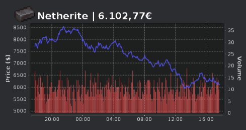

市场简介
Nascraft 中的市场
整个插件的核心就是「市场」，所以理解它怎么运转非常重要。
现实里每样东西都有价值，木头、黄金、甚至空气。这些价值由市场决定。这里的「市场」指的是：根据需求、可获得性和供给量等因素决定价格的机制。
看几个例子：
- 木头：需求很大，但供给同样充足，所以价格相对便宜。
- 黄金：需求高、产出少，所以价格昂贵。
- 空气：随处可见，几乎没有价值。

为了在 Minecraft 里复刻这种动态，插件使用的是「线性报价（linear quote）」：每一次交易只让价格移动一点点，必须经过多次成交才会出现明显的涨跌。这和现实世界不同——现实中价格可以一次跳很多，而不需要大量成交。
为什么要用线性报价？因为 Minecraft 服务器没有成千上万的做市商，给每一次交易都做完整的撮合会过于复杂；线性报价还能保证价格走势平滑，不会突然跳变。
玩家怎么参与市场
Nascraft 提供了多种渠道：
